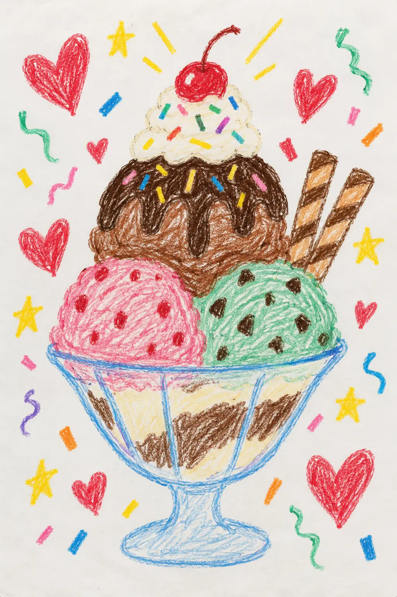
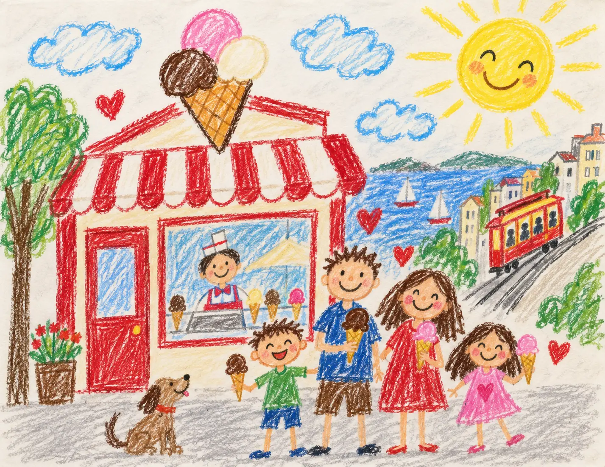

Worth the climb up the hill, every single time.

From the guest book · Hyde & Union
Love notes
Love notes
to the corner.
Generations have climbed the hill for a scoop—and left us stories sweeter than anything in the case.

Pinned to the parlor wall
Little notes.
Little notes.
Big love.
Real words from Google, Yelp, and guests who have made this corner part of their San Francisco ritual.
Swipe or drag the notes →★★★★★Google
The sticky chewy chocolate lives up to the hype. An SF institution that still feels like 1948 inside.
★★★★★Yelp
We take every visitor here. Cable car ride, a cone at Swensen's, then walk down to the bay. Perfect afternoon.
★★★★★In Store
You can taste the difference when it's made by hand in the same shop. My kids love it as much as I did growing up.
Preview notes: approved customer reviews will appear here automatically.
A growing stack of sweet memories
The fridge-door collection
Smiles, scoops
Smiles, scoops
& masterpieces.
The best parts of the parlor never fit neatly in a frame. They arrive as group photos, sticky little fingerprints, and drawings we want to keep forever.

“The drawings go up. The photos stay. Every visit adds another page.”
— From our little corner


Pick your
stack.
Google, Yelp, or Tripadvisor—three places to hear what guests are saying about one little corner.
still worth the climb
The love is local
 San Francisco
San Francisco
Legacy Business
Read the Swensen's story
A legacy you can still taste.
Awards are sweet. The real honor is watching another generation walk through the same door, order an old favorite, and make Hyde & Union part of its own story.
San FranciscoLegacy Business
Your turn
Leave a little
Leave a little
love note.
Your words help the next person discover our corner—and give the team something sweet to pin up.